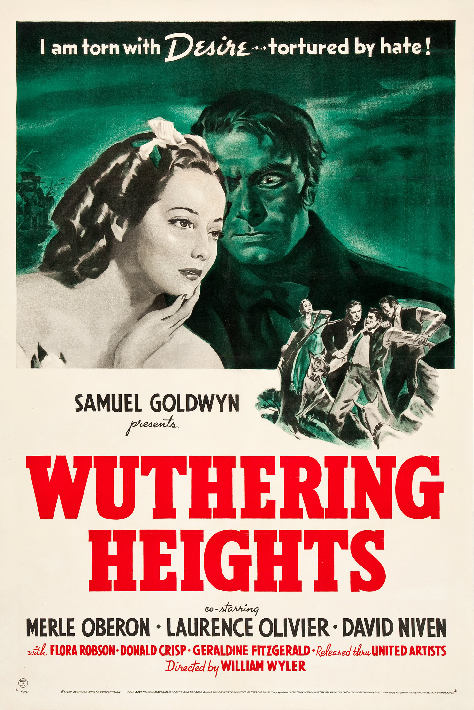
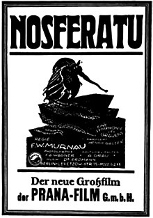
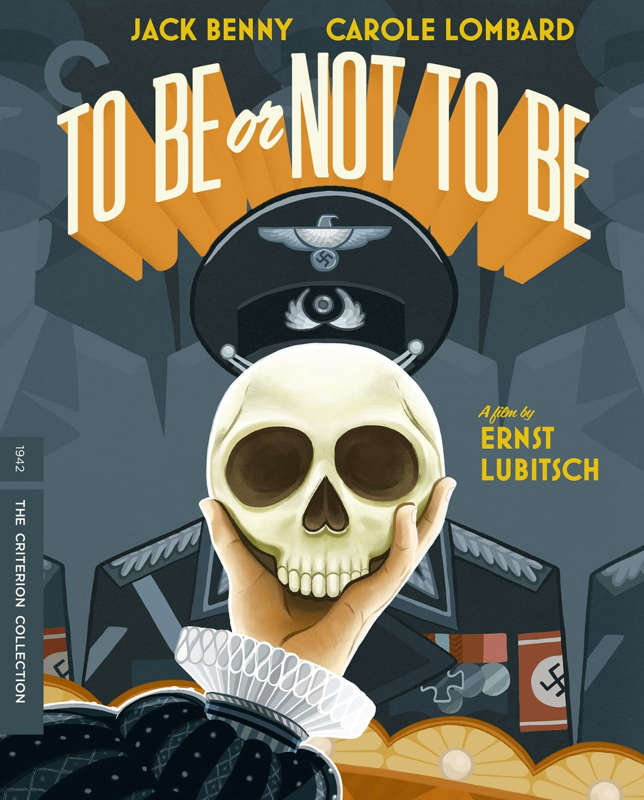
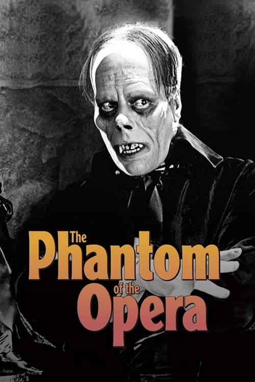
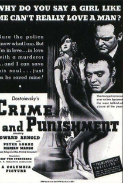

FILMES
LIVROS
MUSICAS
FÓRUM
FILMES DISPONÍVEIS





Morro Dos Ventos Uivantes - 1939
FECHAR
Nosferatu - 1922
FECHAR
Tempos Modernos - 1936
FECHAR
Ser ou Não Ser - 1942
FECHAR
O Fantasma da Opera - 1925
FECHAR
Crime e Castigo - 1935
FECHAR